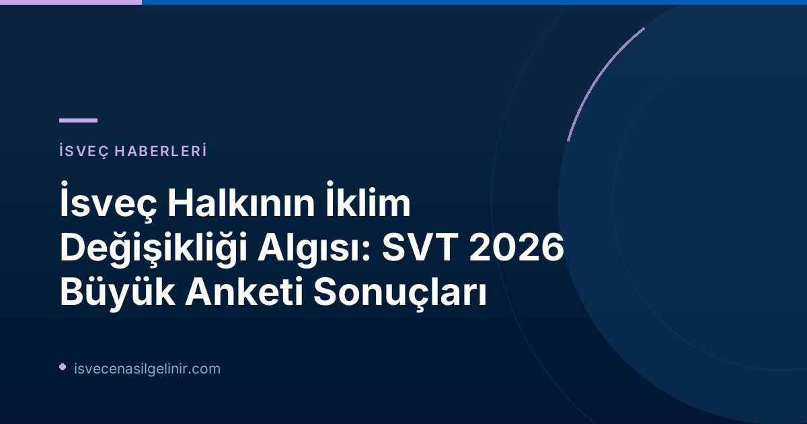

İsveç Halkı İklim Değişikliği Konusunda Ne Düşünüyor? SVT Anketinin Ana Bulguları
SVT'nin geniş katılımlı iklim araştırması, İsveçlilerin iklim değişikliğine bakış açılarında önemli farklılıklar olduğunu gözler önüne serdi. Yaz boyunca devam eden orman yangınları ve şahit olunan sıcaklık rekorları, doğal olarak kamuoyunun bu konudaki hassasiyetini artırdı. Ancak anket, bu hassasiyetin her kesimde aynı düzeyde olmadığını gösteriyor.
Orman Yangınları ve İklim Değişikliği Bağlantısı
Anketten Önemli Notlar
- 4 Ağustos 2026 tarihli habere göre, İsveçlilerin önemli bir kısmı orman yangınları ile iklim değişikliği arasında doğrudan bir bağlantı olduğuna inanıyor.
- İsveç’teki aşırı sıcak hava dalgaları, vatandaşların Avrupa içindeki tatil planlarını dahi etkilemiş durumda. Dün (5 Ağustos 2026) yayınlanan bir habere göre, her iki İsveçliden biri aşırı sıcaklar nedeniyle Avrupa'da tatil yapmaya daha az istekli olduğunu belirtiyor.
Anket sonuçlarına göre, İsveç'teki orman yangınlarının sıklığı ve şiddeti birçok vatandaş tarafından iklim değişikliğinin doğrudan bir sonucu olarak algılanıyor. Bu algı, bilimsel bulgularla da desteklenirken, halkın günlük yaşam deneyimlerinin bu konudaki farkındalığı artırdığı düşünülüyor.
Sıcaklık Rekorları ve Tatil Tercihleri Üzerine Etkileri
Aşırı sıcaklıklar sadece İsveç'i değil, tüm Avrupa'yı etkilemekte. Anket, bu durumun İsveçlilerin seyahat alışkanlıklarını bile değiştirdiğini gösteriyor. Rekor sıcaklıkların yaşandığı bölgelere yönelmek yerine, daha serin destinasyonları tercih etme eğilimi artıyor. Bu da iklim değişikliğinin turizm sektörü başta olmak üzere birçok alanda dolaylı etkilerinin olacağının bir göstergesi.
Siyasi Partilere Göre Görüş Farklılıkları: SD Seçmenleri
Anketin en dikkat çekici bulgularından biri ise siyasi partilere göre iklim değişikliği algısındaki farklılıklar. 4 Ağustos 2026 tarihli habere göre, özellikle İsveç Demokratları (SD) seçmenlerinin çoğunluğu, son dönemdeki sıcaklık rekorlarının iklim değişikliğinden kaynaklandığına inanmıyor. Bu durum, iklim değişikliği konusunun İsveç siyasetinde hala kutuplaştırıcı bir etkiye sahip olduğunu ve farklı siyasi görüşlere sahip seçmen tabanları arasında önemli algı farklılıkları bulunduğunu ortaya koyuyor.
| Konu | SVT Anket Bulgusu | Tarih |
|---|---|---|
| Orman yangınları ve iklim değişikliği ilişkisi | Pek çok İsveçli yangınları iklim değişikliği ile ilişkilendiriyor. | 4 Ağustos 2026 |
| Avrupa'da tatil istekliliği | Her iki İsveçliden biri aşırı sıcaklar sonrası Avrupa'da tatile daha az istekli. | 5 Ağustos 2026 |
| SD seçmenlerinin sıcaklık rekoru algısı | Çoğunluk sıcaklık rekorlarının iklim değişikliğinden kaynaklandığına inanmıyor. | 4 Ağustos 2026 |
| İlgili bilgi (örn: AB linki için) | İsveç'in iklim politikaları ve çevreye duyarlılığı hakkında daha fazla bilgi edinmek için İsveç Vatandaşlık Sınavı platformunu ziyaret edebilirsiniz. | N/A |
SVT Canlı Yayını ve Uzman Panel
SVT Nyheter, anket sonuçlarını ve iklim değişikliği konusunu daha derinlemesine ele almak için 6 Ağustos 2026 tarihinde saat 13:00'te canlı bir yayın gerçekleştirdi. Bu özel yayına, Indikator anket firması yöneticisi Per Oleskog Tryggvason, SVT muhabiri Julia Atiyeh, Uppsala Üniversitesi sosyoloji doçenti Daniel Lindvall, SVT dış haberler muhabiri Maria Lapenkova ve fotoğrafçı Tomas Hallstan gibi önemli isimler katıldı. Uzmanlar, anketin metodolojisi, bulguların toplumsal yansımaları ve iklim değişikliğinin İsveç üzerindeki potansiyel etkilerini tartıştılar. Bu tür platformlar, kamunun bilgilendirilmesi ve bilinç düzeyinin artırılması açısından büyük önem taşımaktadır.
İsveç'in İklim Değişikliğiyle Mücadeledeki Konumu
İsveç, küresel çapta iklim değişikliğiyle mücadelede öncü ülkelerden biri olarak kabul edilmektedir. Ülke, iddialı çevre hedefleri ve sürdürülebilirlik politikalarıyla tanınır. Ancak SVT anketinin de gösterdiği gibi, iklim değişikliğinin nedenleri ve etkileri konusundaki toplumsal konsensüs her zaman tam olmayabilir. Bu durum, eğitim ve kamuoyu bilgilendirme çabalarının önemini bir kez daha ortaya koymaktadır.
İklim Değişikliğinin Küresel Boyutları
İsveç'teki bu tartışmalar, iklim değişikliğinin küresel bir sorun olduğu gerçeğini bir kez daha vurguluyor. Orman yangınları, sıcak hava dalgaları, sel ve diğer ekstrem hava olayları dünyanın farklı coğrafyalarında yaşanmakta ve toplumlar üzerinde derin etkiler bırakmaktadır. Bu nedenle, uluslararası işbirliği ve ortak çözümler bulma ihtiyacı her zamankinden daha acildir.
Sonuç: İklim Bilinci ve Toplumsal Diyalog
SVT'nin 2026 iklim anketi, İsveç toplumunun iklim değişikliğine dair karmaşık ve çeşitli bakış açılarına sahip olduğunu gösteriyor. Bu tür araştırmalar, politika yapıcılar ve sivil toplum kuruluşları için değerli veriler sunarak, daha etkili iletişim stratejileri geliştirmelerine ve iklim eylemlerini şekillendirmelerine yardımcı olabilir. İklim değişikliğiyle mücadele, sadece devletlerin değil, her bireyin ve topluluğun sorumluluğunda olan kolektif bir çabadır. İsveç'ten gelen bu veriler, konunun toplumsal diyalogda ne kadar merkezde yer aldığının önemli bir kanıtıdır.
Referanslar:
İsveç'e Göç ve Vatandaşlık Süreçleri Hakkında Bilgi Edinin
İsveç'te yaşama, çalışma ve vatandaşlık alma süreçleri hakkında merak ettiğiniz her şeyi öğrenmek için web sitemizi ziyaret edin. Güncel bilgiler, rehberler ve ipuçları ile hayallerinizdeki İsveç yaşamına bir adım daha yaklaşın!